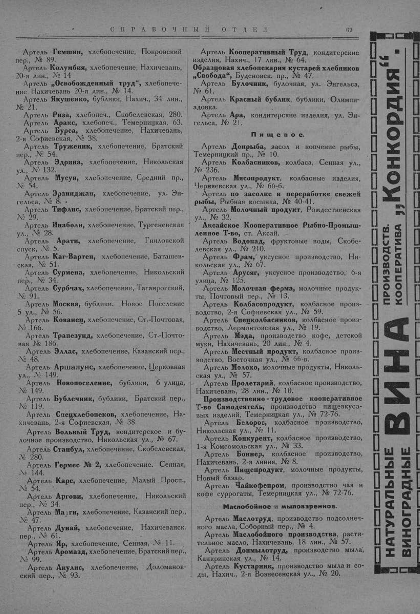

Лист источника 119
Скан

Распознанный текст
СПРАВОЧНЫЙ ОТДЕЛ 69
Артель Гемшин, хлебопечение, Покровский
пер., № 89.
Артель Колумбия, хлебопечение, Нахичевань,
20-я лин., № 14
Артель „Освобожденный труд“, хлебопече-
ние Нахичевань 20-я лин., № 14.
Артель Якушенко, бублики, Нахич., 34 лин.,
№ 21.
Артель Риза, хлебопеч., Скобелевская, 280.
Артель Аракс, хлебопеч., Темерницкая, 63.
Артель Бурса, хлебопечение, Нахичевань,
2-я Софиевская, № 38.
Артель Труженик, хлебопечение, Братский
пер., № 54.
Артель Эдрина, хлебопечение, Никольская
ул., № 132.
Артель Мусуи, хлебопечение, Средний пр.,
№ 54.
Артель Эрзинджан, хлебопечение, ул. Эн-
гельса, № 8. .
Артель Тифлис, хлебопечение, Братский пер.,
№ 29.
Артель Инаболи, хлебопечение, Тургеневская
ул., № 28.
Артель Арати, хлебопечение, Гниловской
спуск, № 5.
Артель Каг-Варген, хлебопечение, Баташев-
ская, № 51.
Артель Сурмена, хлебопечение, Никольский
пер., № 34.
Артель Сурбчах, хлебопечение, Таганрогский,
№ 91.
Артель Москва, бублики. Новое Поселение
5 ул., № 56.
Артель Кованец, хлебопечение, Ст.-Почтовая,
№ 166.
Артель Трапезунд, хлебопечение, Ст.-Почто-
вая № 186.
Артель Эллас, хлебопечение, Казанский пер.,
№ 48.
Артель Аршалуис, хлебопечение, Церковная
ул., № 149.
Артель Новопоселение, бублики, 6 улица,
№ 149.
Артель Бублечник, бублики, Братский пер.,
№ 119.
Артель Спецхлебопеков, хлебопечение, На-
хичевань, 2-я Софиевская, № 38.
Артель Вольный Труд, кондитерское и бу-
лочное производство, Никольская ул., № 67.
Артель Станбул, хлебопечение, Скобелевская,
№ 280.
Артель Гермес № 2, хлебопечение. Сенная,
№ 144.
Артель Карс, хлебопечение, Малый Просп.,
№ 54.
Артель Аргови, хлебопечение, Никольский
пер., № 34.
Артель Мазги, хлебопечение, Казанский пер.,
№ 47.
Артель Дунай, хлебопечение, Нахичеванск.
пер., № 61.
Артель Яр, хлебопечение, Сенная, № 11.
Артель Аромазд, хлебопечение, Братский пер.,
№ 99.
Артель Акулис, хлебопечение, Доломанов-
ский пер., № 93.
Артель Кооперативный Труд, кондитерские
изделия, Нахич., 17 лин., № 64.
Образцовая хлебопекарня кустарей хлебников
„Свобода“, Буденовск. пр., № 47.
Артель Булочник, булочная, ул. Энгельса,
№ 61.
Артель Красный бублик, бублики, Олимпи-
адовка.
Артель Ара, кондитерские изделия, ул. Эн-
гельса, № 21.
Пищевое.
Артель Донрыба, засол и копчение рыбы,
Темерницкий пр., № 10.
Артель Колбасников, колбаса, Сенная ул.,
№ 236.
Артель Мясопродукт, колбасные изделия,
Черняевская ул., № 66-б.
Артель по засолке и переработке свежей
рыбы, Рыбная косынка, № 40-41.
Артель Молочный продукт, Рождественская
ул., № 32.
Аксайское Кооперативное Рыбно-Промыш-
ленное Т-во, ст. Аксай.
Артель Водопад, фруктовые воды, Скобе-
левская ул., № 210.
Артель Фрам, уксусное производство, Ни-
кольская ул., № 67.
Артель Арусяг, уксусное производство, 6-я
улица, № 125.
Артель Молочная ферма, молочные продук-
ты, Почтовый пер., № 13.
Артель Колбасопродукт, колбасное произ-
водство, 2-я Софиевская ул., № 59.
Артель Спецколбасников, колбасное произ-
водство, Лермонтовская ул., № 19.
Артель Мэда, производство кофе, детской
муки, Нахичевань, 20 лин., № 4.
Артель Местный продукт, колбасное произ-
водство, Восточная ул., № 66-в.
Артель Молоко, молочные продукты, Николь-
ская ул., № 57.
Артель Пролетарий, колбасное производство,
Нахичевань, 28 лин., № 10.
Производственно - трудовое кооперативное
Т-во Самодеятель, производство пищевкусо-
вых изделий, Темерницкая ул., № 72-76.
Артель Белорос, колбасное производство,
Никольская ул., № 11.
Артель Конкурент, колбасное производство,
1-я Комсомольская ул., № 33.
Артель Боннер, колбасное производство,
Нахичевань, 2-я линия, № 8.
Артель Пищепродукт, молочные продукты,
Новый базар.
Артель Чайкофепром, производство чая и
кофе суррогаты, Темерницкая ул., № 72-76.
Маслобойное и мыловаренное.
Артель Маслотруд, производство подсолнеч-
ного масла, Соборный пер., № 4.
Артель Маслобойного производства, расти-
тельное масло, Нахичевань, 18 лин., № 57.
Артель Донмылотруд, производство мыла,
Канкринская ул., № 14.
Артель Кустарник, производство мыла и со-
ды, Нахич., 2-я Вознесенская ул., № 20.
ПРОИЗВОДСТВ.
КООПЕРАТИВА „Конкордия“.
ВИНА
НАТУРАЛЬНЫЕ
ВИНОГРАДНЫЕ